확률과 통계
교과서 Ⅲ-1. 확률분포 (79~85쪽)
공과대학 1학년
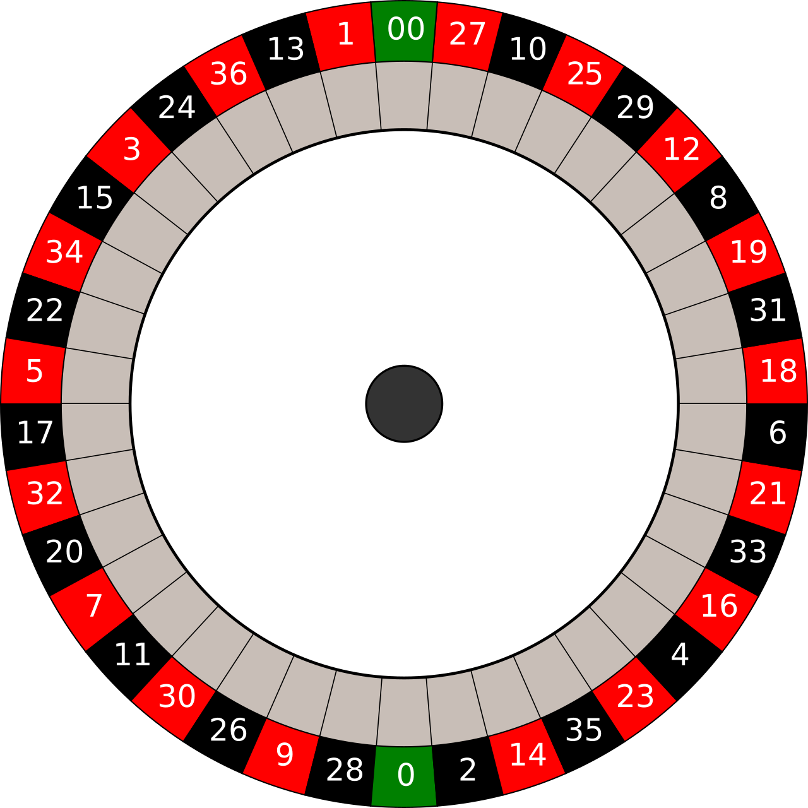
동전·주사위의 결과 → 숫자 → 분포 · 오늘 배울 내용 · 영상: Google Flow (Veo 3.1 Lite)로 생성
도입
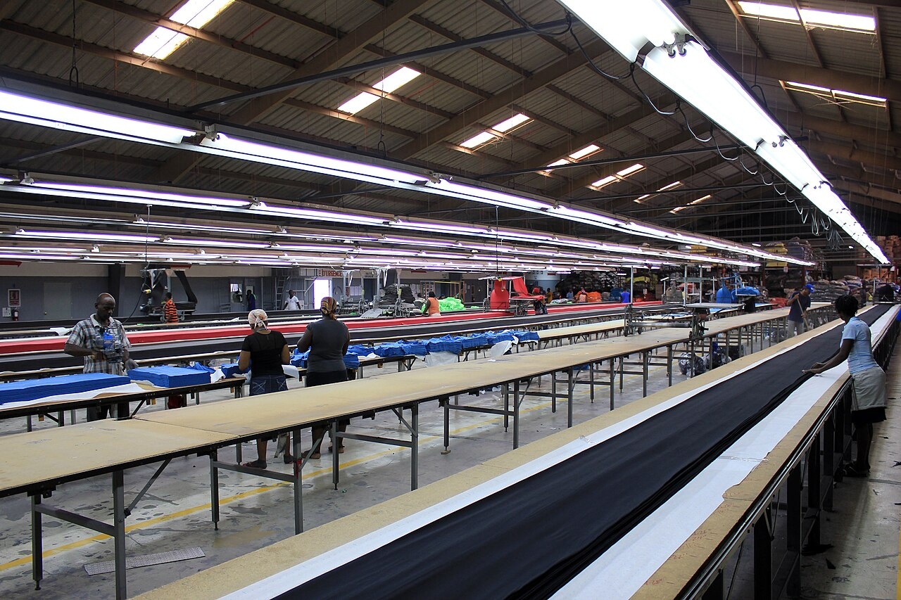
하루 생산품 중 불량품 개수
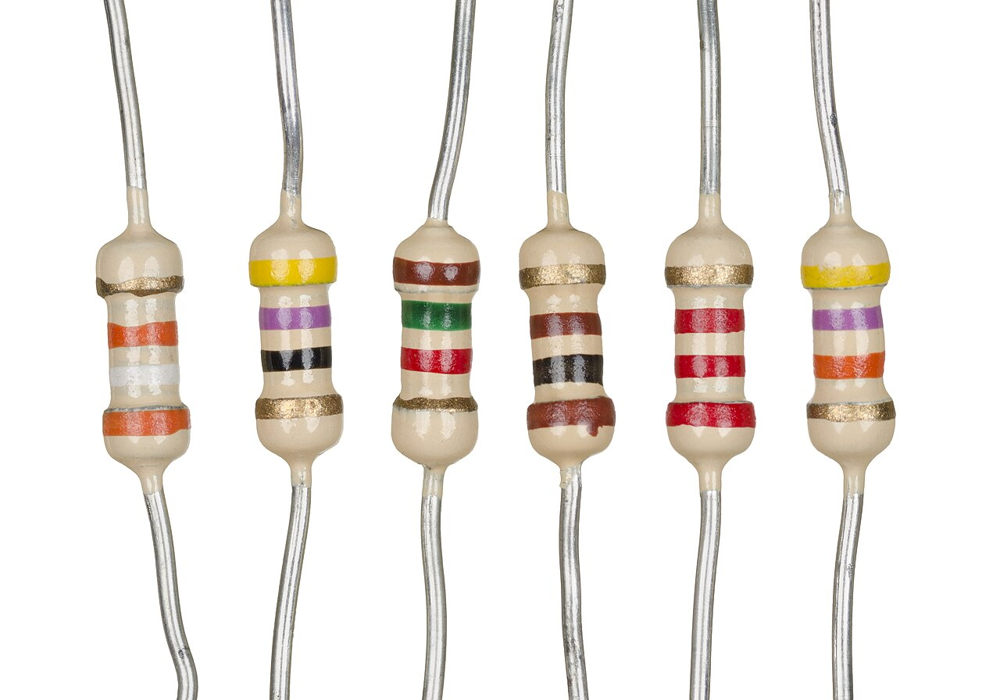
100 Ω 저항의 실제 값 ±5%
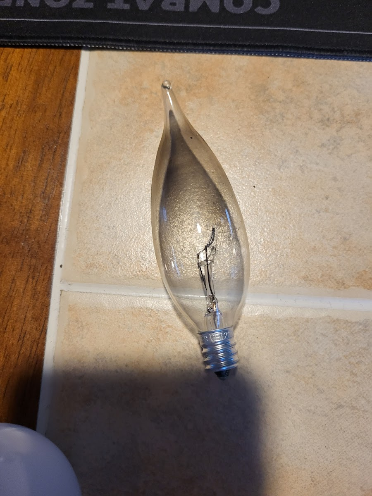
전구가 꺼질 때까지의 시간
같은 부품도 결과가 매번 다름 → 이 흩어짐을 숫자로 다루는 도구 = 확률과 통계
사진: Yinan Chen (PD), Evan-Amos (PD), Wikimedia Commons
도입
01
결과 → 숫자로 바꾸는 함수
02
셀 수 있는 값 vs 구간의 모든 실수
03
표와 막대그래프
04
확률밀도함수, 정적분
생각 열기 · 교과서 79쪽
한 개의 동전을 두 번 던지는 시행
앞면 H, 뒷면 T
S = {HH, HT, TH, TT}
질문: 앞면이 나온 횟수 X가
가질 수 있는 값은?
답: 0, 1, 2 중 하나
실시간 시뮬레이션: 동전 두 개를 계속 던지며 X의 상대도수를 기록함
비유
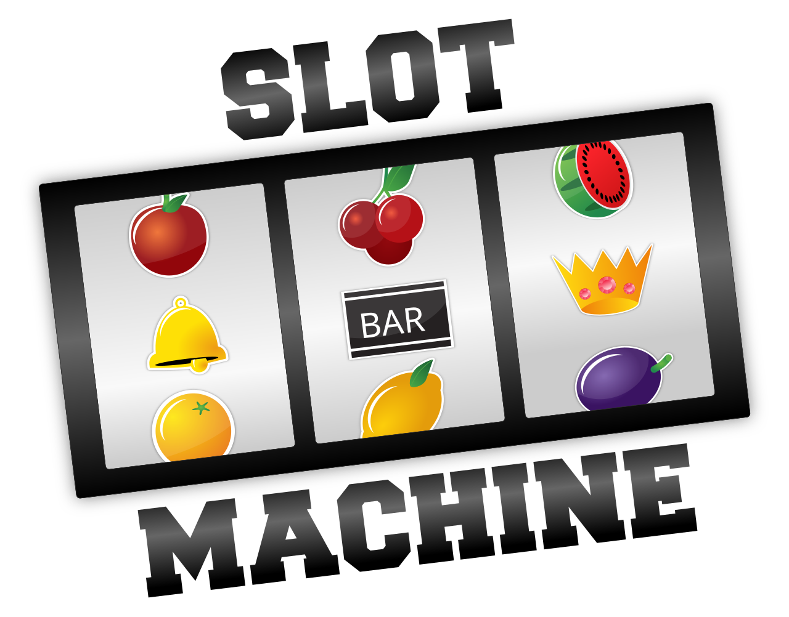
그림 조합(결과) → 상금(숫자)
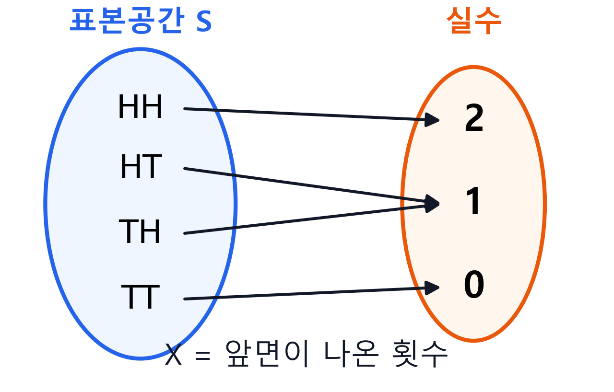
넣는 것: 시행의 결과
나오는 것: 실수 하나
HT, TH → 같은 1도 가능
그림: gnokii, Slot machine, CC0, Wikimedia Commons
정의 · 교과서 79쪽
표본공간의 각 원소에 실수 하나를 대응시키는 함수 = 확률변수
X : S → 실수 전체
정의역: 표본공간 S · 공역: 실수 전체
확률변수 X, Y, Z · 그 값 x, y, z
확률변수 X가 값 x를 가질 확률
부품 10개 검사 → X = 불량품 개수 (0~10)
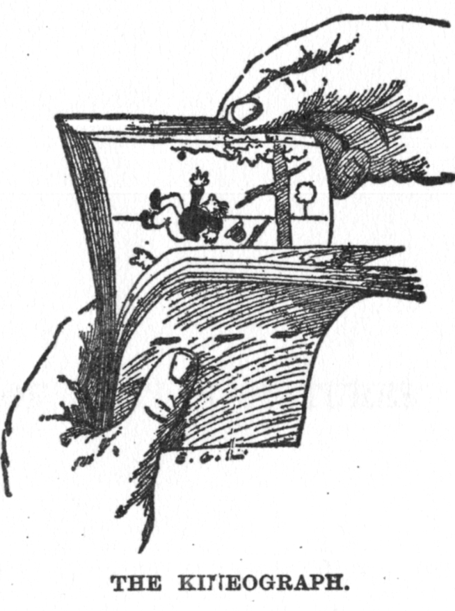
비유 · 교과서 79쪽 다가서기
값이 유한개이거나
자연수처럼 하나, 둘, … 셀 수 있음
어떤 범위 안의 모든 실수 값
값과 값 사이에 빈틈 없음
그림: John Barnes Linnet, The Kineograph (1886), 퍼블릭 도메인
이산확률변수 · 교과서 80쪽 예제 1 ⑴
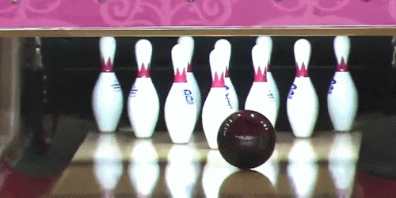
성공 s, 실패 f
S = {s, fs, ffs, fffs, …}
X = 1, 2, 3, 4, …
무한히 많지만 셀 수 있음 → 이산
공학의 이산확률변수 하루 불량품 개수 · 1초 동안 들어온 패킷 수 · 웨이퍼 한 장의 결함 개수
애니메이션: Groink, 10-pin bowling strike, CC0, Wikimedia Commons
연속확률변수 · 교과서 80쪽 예제 1 ⑵
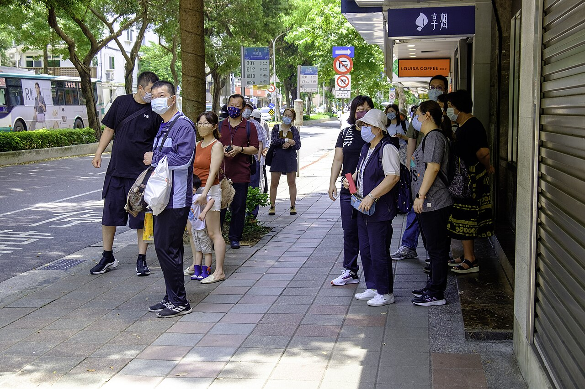
7분 간격으로 오는 버스
기다리는 시간 X (분)
S = {x | 0 ≤ x ≤ 7}
0 이상 7 이하 모든 실수 → 연속
공학의 연속확률변수 저항값(Ω) · 전구 수명(시간) · 측정 오차(mm) · 잡음 전압(V)
사진: 玄史生, CC0, Wikimedia Commons
확인 문제 · 교과서 80쪽 문제 2 + 공학 문항
⑴ 어느 지역에 일 년 동안 내리는 강수량
⑵ 어느 날 동물원의 입장객 수
⑶ 동전 10개를 던질 때 앞면이 나온 동전의 개수
⑷ 어느 공장에서 생산된 전구의 수명
⑸ 반도체 웨이퍼 한 장에서 발견된 결함 개수
⑹ 스프링 길이를 측정한 값
?
?
?
?
?
?
연속
이산
이산
연속
이산
연속
판단 기준: 하나, 둘, … 셀 수 있으면 이산 · 측정값(길이, 시간, 무게)은 대부분 연속 · 발표 모드에서 클릭할 때마다 정답 표시
확률질량함수 · 교과서 81쪽
값 xᵢ에 확률 pᵢ를 대응시키는 함수
P(X = xᵢ) = pᵢ (i = 1, 2, …, n)
대응 관계 = 확률분포 · 예: 동전 두 번, 앞면 횟수 X
| X | 0 | 1 | 2 | 합계 |
|---|---|---|---|---|
| P(X = x) | 1/4 | 1/2 | 1/4 | 1 |
질량 = 각 값 위에 얹힌 확률의 무게
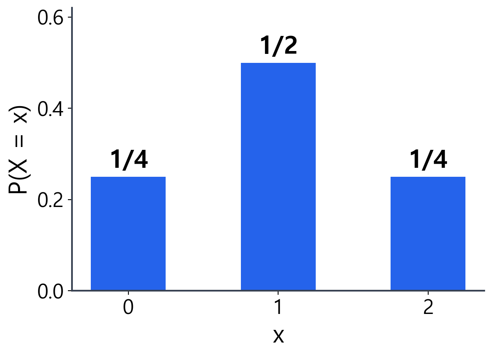
확률질량함수 · 교과서 82쪽
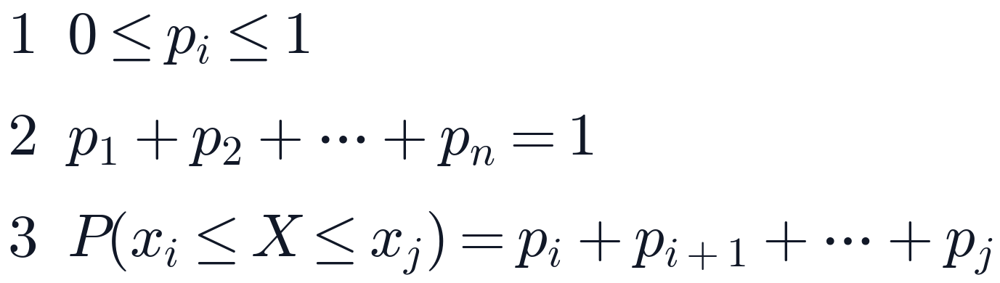
컵 하나는 0 이상 1 이하 · 모든 컵의 합 = 1 · 구간의 확률 = 그 구간 컵들의 합
예제 · 교과서 82쪽 예제 2를 공학 상황으로 변형
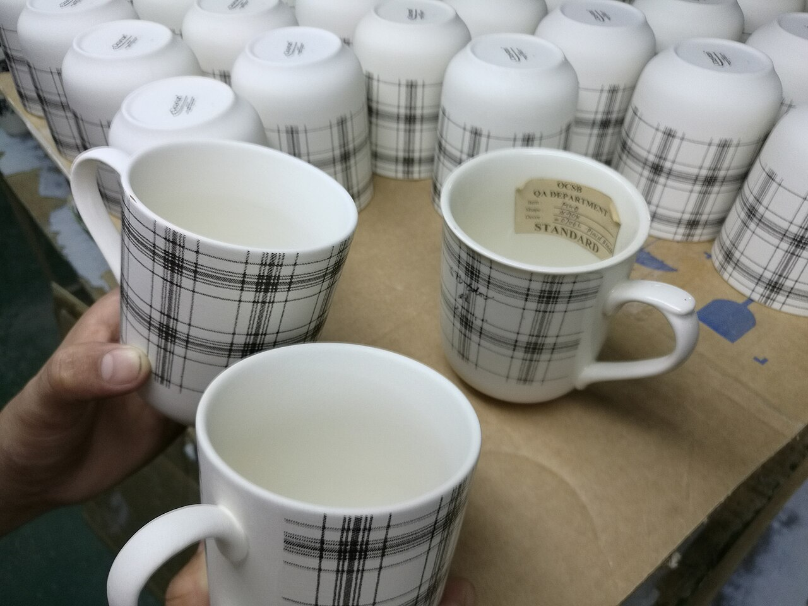
부품 7개 중 불량품 3개
임의로 3개 꺼내 검사
X = 꺼낸 불량품 개수
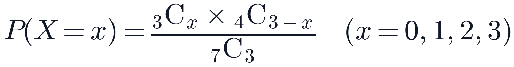
P(X ≥ 2) = 12/35 + 1/35 = 13/35
→ 3개 중 2개 이상이 불량일 확률 약 37%
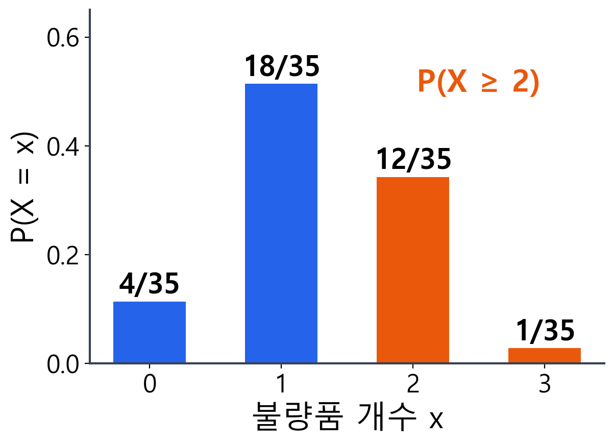
사진: Encik Tekateki, Quality Control of Ceramic Mugs, CC BY-SA 4.0, Wikimedia Commons
연속확률변수 · 교과서 83쪽
0~10 눈금 원판, 바늘이 멈춘 눈금 X
질문: 바늘이 정확히 3.000…에 멈출 확률은?
가능한 값이 무수히 많음 → 한 점의 확률 = 0
구간으로 물음: P(a ≤ X ≤ b) = (b − a) / 10
그림: Douglas Perkins, Basic roulette wheel, CC0, Wikimedia Commons
실시간 시뮬레이션 · 교과서 83쪽
처음 5번은 천천히, 이후 400번까지 빠르게 · 멈춘 눈금이 고르게 쌓임 → f(x) = 1/10 · 넓이 = 확률
확률밀도함수 · 교과서 83·85쪽
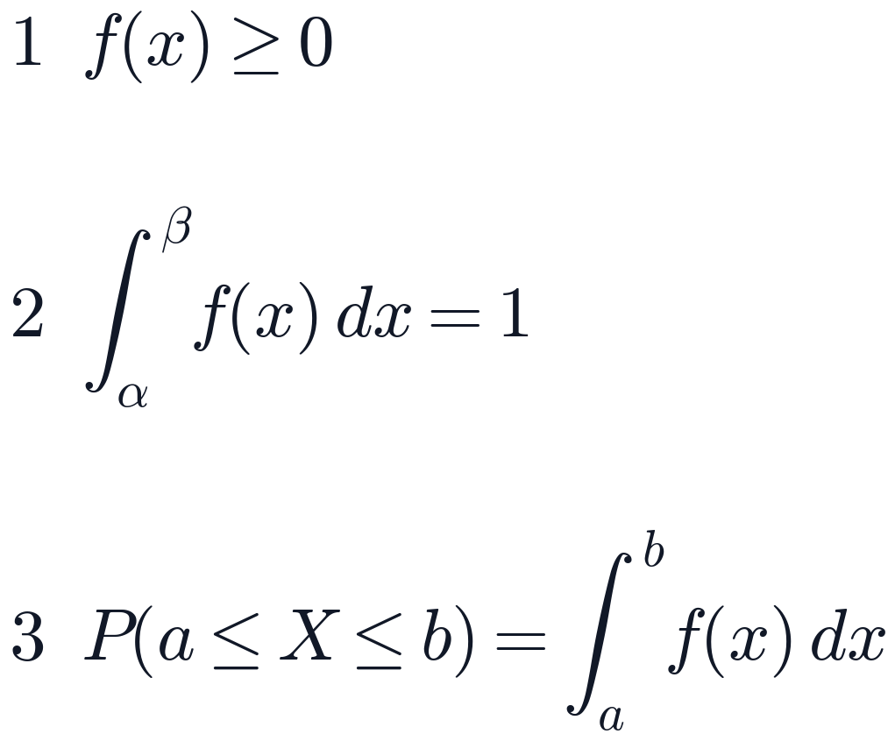
f(x) 자체는 확률이 아님
넓이(정적분)가 확률
f(x) > 1인 경우도 가능
한 점의 확률 = 0
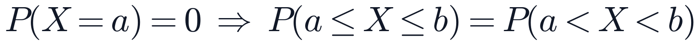
애니메이션 · 교과서 85쪽 탐구
계산 대기 시간 f(x) = x(12 − x)/288 · 막대 넓이의 합(이산) → 곡선 아래 넓이(연속)
실시간 탐색기 · 교과서 85쪽
구간 [a, b]가 자동으로 바뀌며 넓이 P(a ≤ X ≤ b) = ∫ f(x) dx 값을 실시간 계산 · 4초마다 다음 구간
예제 · 교과서 84쪽 예제 3
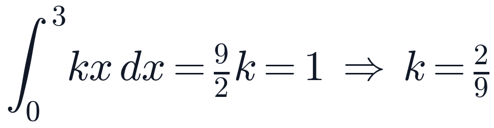
넓이로 보면: 삼각형 ½ × 3 × 3k = 1
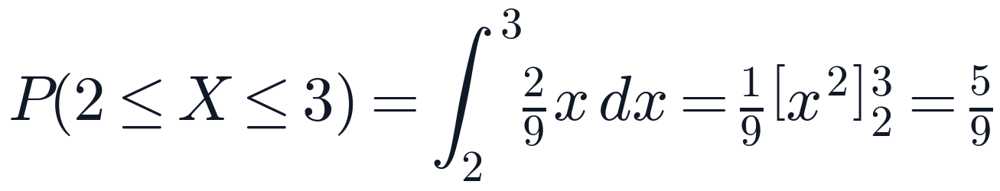
넓이로 보면: 사다리꼴 ½ × (4/9 + 6/9) × 1
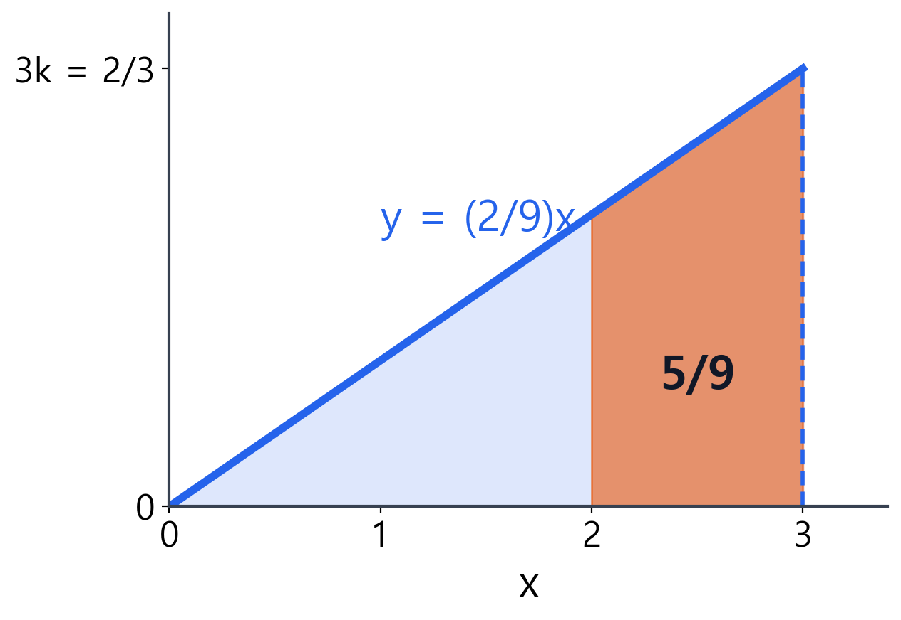
연습 문제
⑴ 상수 k의 값 ⑵ P(1 < X ≤ 2)
6분 이상 기다릴 확률 (힌트: 그래프의 대칭)
P(X=0) = 0.5, P(X=1) = 0.3, P(X=2) = a, P(X=3) = 0.05
⑴ a의 값 ⑵ 불량품이 1개 이상일 확률
⑴ k = 1/4 ⑵ 5/8
1/2 (x = 6 대칭)
⑴ a = 0.15 ⑵ 0.5
발표 모드에서 클릭할 때마다 정답 표시
정리
| 개념 | 뜻 | 비유 |
|---|---|---|
| 확률변수 | 표본공간 → 실수 함수 | 슬롯머신 |
| 이산확률변수 | 셀 수 있는 값 | 플립북 낱장 |
| 연속확률변수 | 구간의 모든 실수 | 플립북 움직임 |
| 확률질량함수 | P(X = xᵢ) = pᵢ, 합 = 1 | 확률을 컵에 나눠 담기 |
| 확률밀도함수 | 넓이 = 확률, 전체 넓이 = 1 | 회전 원판 |
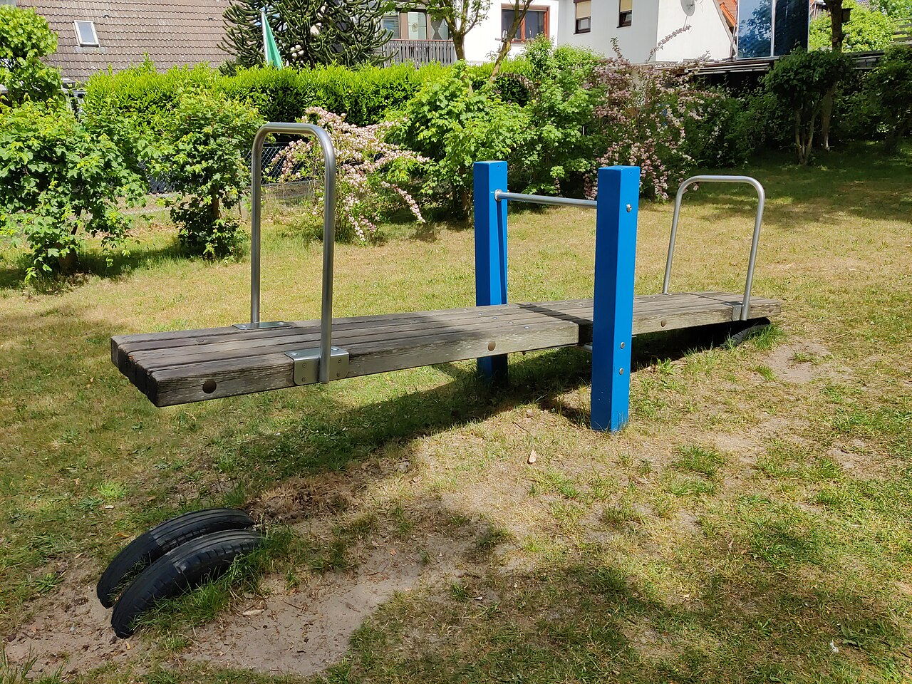
다음 주 예고 · 교과서 86~91쪽
할인권: 5000원 70장 · 10000원 20장 · 20000원 10장
확률 = 무게 → 시소가 수평인 받침점 위치는?
예습: 교과서 86쪽 생각 열기
사진: RogerWiki, Stand-up seesaw playground, CC0, Wikimedia Commons
표지·원판: Douglas Perkins, Basic roulette wheel, CC0
슬롯머신: gnokii, Slot machine, CC0
생산라인: Yinan Chen, 퍼블릭 도메인
저항: Evan-Amos, 퍼블릭 도메인 · 전구: 퍼블릭 도메인
플립북: John Barnes Linnet, The Kineograph (1886), 퍼블릭 도메인
볼링 애니메이션: Groink, 10-pin bowling strike, CC0
버스 정류장: 玄史生, CC0
머그컵 품질검사: Encik Tekateki, Quality Control of Ceramic Mugs, CC BY-SA 4.0
시소: RogerWiki, Stand-up seesaw playground, CC0
인트로 영상: Google Flow (Veo 3.1 Lite)로 생성
그래프·애니메이션·시뮬레이션: 직접 제작
사진 출처: Wikimedia Commons (commons.wikimedia.org)